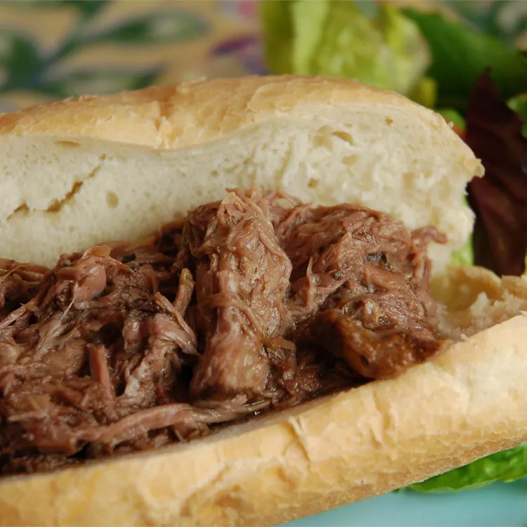

Slow Cooker Italian Beef

This Italian beef is perfect for sandwiches
It's easy to make in a slow cooker and
tastes just like my all-time favorite
sandwich that I used to get at a local
restaurant. Serve on crusty rolls with
roasted sweet or hot peppers.
Ingredients:
- 3 cups water
- 1 (.7 ounce) package dry Italian-style salad dressing mix
- 1 teaspoon dried oregano
- 1 teaspoon dried basil
- 1 teaspoon dried parsley
- 1 teaspoon onion salt
- 1 teaspoon garlic powder
- 1 bay leaf
- 1 teaspoon salt
- 1 teaspoon ground black pepper
- 1 (5 pound) rump roast
Steps:
- Combine water, salad dressing mix,
oregano, basil, parsley, onion salt,
garlic powder, bay leaf, salt, and
black pepper in a saucepan. Stir well,
and bring to a boil.
- Place rump roast in a slow cooker;
pour hot herb mixture over the meat.
- Cover and cook on Low for 10 to 12
hours, or on High for 4 to 5 hours.
Remove bay leaf; shred beef with a
fork and serve with some of the hot gravy.
Return to main page